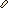
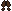
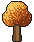
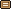
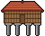
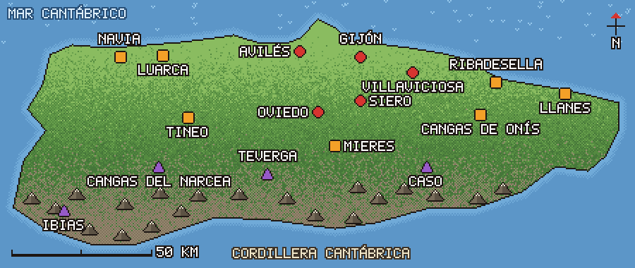

Inicio
El jabalí (Sus scrofa) vive en los bosques, prados y hasta en las afueras de los pueblos asturianos. Aquí tienes su ficha, dónde se le gestiona, cómo suena y cómo convivir con él.

13.666jabalíes cazados en Asturias en la temporada 2024-25
120 dde gestación, aprox.
SEP-DICcelo principal (otoño)
Fuentes y límitesConsultadas el 27/10/2026. Todos los enlaces se abren en tu navegador.
- Resolución de 14/01/2026 (Principado de Asturias): plan frente a la peste porcina africana; capturas 2024-25, zonas y medidas.
- Ficha de Sus scrofa (Universitat de València): descripción, dieta, vida social, reproducción.
- Markina et al., Galemys 15 (2003): reproducción del jabalí en Álava (Cantábrico).
- Mundo Veterinario: Porcino (mayo 2007): biología del jabalí en Extremadura.
- El Debate, 13/03/2024: planes del Principado y aumento en zonas bajas.
- AgroNews Castilla y León, 15/10/2026: PPA en Cataluña (datos del MAPA).
- RACE: atropellos de animales y Autofácil: responsabilidad.
Lo que no he podido comprobar: pesos y medidas de jabalíes asturianos (las cifras de tamaño son del Montseny); el calendario de caza 2026-27 (consulta la Disposición General de Vedas vigente en medioambiente.asturias.es); y la lista de concejos por zona, que sale de las tablas de la resolución y conviene contrastar con el PDF.
Hecho a mano: los sonidos son recreaciones sintéticas, el mapa es esquemático (contorno y posiciones aproximadas) y las escenas son ilustraciones pixel art. El retrato es la foto que aportó el usuario.
Ficha
Toca cada tarjeta para abrirla.
Quién es
Mamífero omnívoro de cuerpo robusto, más alto por delante, con el cuello poco visible y las orejas pequeñas y erguidas. El dimorfismo es marcado: los machos son más corpulentos y tienen los colmillos más desarrollados.
Tamaño de referencia (adultos del Montseny, Cataluña; no hay cifras asturianas en las fuentes que he consultado):
| Machos | Hembras | |
|---|---|---|
| Cabeza-cuerpo | 133-148 cm | 118-137 cm |
| Peso | 60-118 kg | 40-65 kg |
| Colmillos | 17,5-24 cm | 13-20 cm |
Las crías (rayones) llevan pelaje pardo claro con líneas longitudinales oscuras hasta los 4-5 meses. Después son bermejos (pardo rojizo) y, entre los 10 y los 12 meses, estrenan el pelaje adulto pardo grisáceo.
Fuente: Universitat de València.
Qué come
Omnívoro con predominio vegetal: frutos de fagáceas (bellotas, hayucos), productos agrícolas, raíces y hongos. La parte animal es frecuente pero poco importante en cantidad: invertebrados, anfibios y micromamíferos.
Al buscar comida bajo tierra con el hocico deja hozaduras, que pueden afectar de forma importante a algunos ecosistemas y son uno de los rastros más fáciles de reconocer.
Fuente: Universitat de València.
Celo y crías
- Celo principal: en otoño (septiembre-diciembre). En Álava, zona atlántica de transición, el máximo se situó a finales de septiembre.
- Gestación: unos 120 días (otros autores hablan de unos 115).
- Partos: mayoritarios entre enero y abril; en Álava se concentraron de noviembre a abril, con máximo en enero-febrero, aunque hubo nacimientos todo el año.
- Camada: mediana de 3-4 crías. En Álava, 3,86 fetos por hembra de media, hasta 5 en hembras de 40-85 kg.
- Precoces: las hembras pueden quedar preñadas en su primer o segundo año, a partir de unos 30 kg. Las crías maman 3-4 meses.
- Mortalidad: los autores del estudio alavés estiman un 30,8 % en el primer año de vida.
Fuentes: U. de València; Markina et al. (2003); Mundo Veterinario (2007).
Vida social y rutina
- La unidad básica es el grupo matriarcal: una o varias hembras adultas con sus crías.
- Los machos jóvenes forman otros núcleos y los machos adultos son solitarios; en el celo se unen temporalmente a los grupos de hembras.
- Es sobre todo crepuscular y nocturno, aunque se deja ver de día donde hay poca perturbación humana.
- Áreas de campeo anuales de 12.000-15.000 ha en machos y hasta 6.000 ha en hembras (datos de la ficha).
- En Extremadura, los machos jóvenes abandonan el grupo al año y pueden desplazarse hasta 50 km.
- Vive en bosques, marismas, cultivos y periferias urbanas; hay indicios de su presencia en pastos subalpinos por encima de 2.400 m.
Fuentes: U. de València; Mundo Veterinario (2007).

En Asturias hoy
El Principado divide el territorio en tres zonas según la densidad de jabalíes y las capturas de la temporada 2024-25:
| Zona | Superficie | Cazados | Objetivo |
|---|---|---|---|
| 1 Central | 161.646,5 ha | 4.178 | +20 % sobre la media de 3 años |
| 2 Intermedia | 521.023 ha | 7.494 | +10 % |
| 3 Sur | 381.317 ha | 1.994 | Mantener |
Densidad de capturas por 100 ha: 2,6 / 1,4 / 0,5. Total: 13.666 jabalíes. La zona central es la de mayor densidad y humanización.
Medidas (vigentes hasta el final de la temporada 2026-27, revisables): más cupo en batidas, recechos y aguardos en las zonas 1 y 2; control en entornos urbanos con arco, aguardos de agentes medioambientales y, si procede, jaulas trampa; visores térmicos y comederos con cereal solo con autorización específica.
Un artículo de El Debate (2024) recoge la hipótesis de investigadores de que el aumento en las zonas bajas se debe a la presión de grandes carnívoros, sobre todo el lobo, en la montaña. Es una explicación citada, no un dato oficial.
Fuentes: Resolución 14/01/2026; El Debate (2024).
Peste porcina africana
El plan asturiano nace del brote detectado en Cataluña en noviembre de 2025, que afecta a jabalíes.
- A 15/10/2026 (datos del MAPA citados por AgroNews): 410 jabalíes positivos y 74 focos, todos en Cataluña. Ningún caso en cerdos domésticos. Ese artículo no menciona casos en otras comunidades.
- En Asturias, cualquier persona puede avisar al 112 si encuentra un jabalí muerto. Agentes del Medio Natural lo retiran, se toman muestras y se analizan por PCR.
- Los jabalíes muertos en carretera los retira la administración titular de la vía.
Fuentes: Resolución 14/01/2026; AgroNews (15/10/2026). La situación cambia: comprueba el dato actual en el MAPA.
Mapa
Toca el mapa para verlo grande y moverlo con el dedo.

Zonas del plan
- Zona 1 · Central
Mayor densidad y humanización. 2,6 jabalíes cazados por 100 ha. - Zona 2 · Intermedia
Densidad media. 1,4 por 100 ha. - Zona 3 · Sur
Densidad baja. 0,5 por 100 ha.
Cada símbolo es un ejemplo de concejo incluido en esa zona, no el límite de la zona: la resolución define cada zona como suma de terrenos cinegéticos y algunos concejos tienen terrenos en dos zonas.
Fuente: Resolución de 14/01/2026.
Concejos por zona
Zona 1:
Avilés, Candamo, Cabranes, Carreño, Castrillón, Corvera, Gijón, Gozón, Grado, Illas, Llanera, Las Regueras, Morcín, Muros de Nalón, Noreña, Oviedo, Pravia, Ribera de Arriba, Riosa, Santo Adriano, Sariego, Siero, Soto del Barco, Villaviciosa.
Zona 2:
Aller, Belmonte, Boal, Bimenes, Cabrales, Caravia, Cangas de Onís, Castropol, Colunga, Coaña, Cudillero, El Franco, Grado, Langreo, Laviana, Lena, Llanes, Mieres, Nava, Navia, Oviedo, Onís, Parres, Peñamellera Alta, Peñamellera Baja, Piloña, Pravia, Proaza, Quirós, Ribadedeva, Ribadesella, Salas, San Martín del Rey Aurelio, San Tirso de Abres, Sueve, Tapia de Casariego, Taramundi, Tineo, Valdés, Vegadeo, Villayón, Villaviciosa, Yernes y Tameza.
Zona 3:
Allande, Amieva, Aller, Belmonte, Caso, Cabrales, Cangas de Onís, Cangas del Narcea, Degaña, Grandas de Salime, Ibias, Illano, Lena, Onís, Pesoz, Ponga, Quirós, Santa Eulalia, San Martín de Oscos, Somiedo, Sobrescobio, Teverga, Vegadeo, Villanueva de Oscos.
Lista extraída de las tablas de la resolución con lectura automática: contrástala con el PDF antes de usarla para algo importante.
Sonidos
Sube el volumen del móvil y toca para escuchar.
Son recreaciones sintéticas hechas por ordenador a partir de descripciones generales del comportamiento. No son grabaciones de jabalíes reales y no están contrastadas con ellas.
Amenaza
Bufidos, castañeteo de colmillos y un gruñido grave: el aviso de «no te acerques».
Celo
Recreación de gruñidos rítmicos de un macho en celo, con chasquidos de mandíbula.
Piara tranquila
Gruñidos suaves de contacto entre una hembra y sus rayones, para comparar con los anteriores.
¿Tienes grabaciones reales? Copia los archivos a assets/www/audio/ con los mismos nombres (amenaza.ogg, celo.ogg, piara.ogg) y los sustituirán.
Convivir
Lo importante para no llevarse sustos.
Si te cruzas con uno
- Mantén la distancia. No te acerques ni intentes la foto de cerca.
- No le des comida.
- Si hay una hembra con rayones, no te interpongas: los grupos son hembras con sus crías.
- Déjale una salida libre y retrocede despacio, sin correr.
- Ten a tu perro atado. Al anochecer y de madrugada hay más actividad.
Consejos de sentido común sobre fauna salvaje; no proceden de una guía oficial del Principado. La rutina crepuscular y nocturna y la vida en grupos matriarcales sí vienen de la ficha de la Universitat de València.
Al volante
- Los jabalíes están detrás del 43 % de los accidentes con animales en España (DGT, vía RACE); la mayoría, de noche y en fin de semana.
- En Álava se registró un pico de atropellos a principios de otoño, ligado a la mayor movilidad del celo.
- En tramos con señal de animales sueltos, reduce la velocidad y aumenta la distancia.
- Si ves uno de noche, pasa de largas a cortas. No pites fuerte: puedes asustarlo; y pasa despacio, que puede haber más detrás.
Si hay choque: sujeta bien el volante y frena de forma controlada; señaliza con triángulos y chaleco; avisa al 112 si hay heridos y al 062 (Guardia Civil/Seprona) para que se ocupen del animal; deja constancia ante ellos.
Responsabilidad: por regla general, el conductor. Puede recaer en el titular del coto si el choque se debe a una batida (durante ella o en las 12 horas siguientes) o en el titular de la vía si faltaba señalización o la valla estaba sin reparar. Revisa si tu póliza cubre animales cinegéticos. No es asesoramiento legal.
Fuentes: RACE; Autofácil; Markina et al. (2003).
Si encuentras uno muerto
- Avisa al 112. El plan de vigilancia de la peste porcina africana depende de que se comuniquen los cadáveres.
- Los agentes del Medio Natural lo retiran y lo llevan a la planta de COGERSA en Serín (Gijón); antes se toman muestras para analizarlas por PCR.
Fuente: Resolución de 14/01/2026.
Fotos
Toca una imagen para verla grande.
Para añadir tus fotos, copia las imágenes a assets/www/fotos/ y apúntalas en fotos.js (hay un ejemplo en el propio archivo).